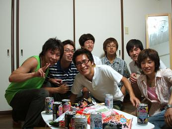
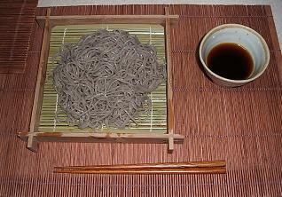
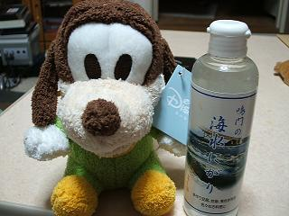

日々、想ふ
〜過去感じたことがつれづれと〜
（できるだけ最大化してお読みください）
過去、想ふ
ただいま。７/１５
広島滞在時間２４時間ありませんでした、タケユキです。
新しい思ひ出「
フライング夏休み」、公開しました。
昨日今日の詳しい出来事はここでまとめました。
当日決めた無理やり帰省、相手してくれた人、
車乗せてくれた人、
説教してくれた人、いろんな人に感謝です。
次帰るのは３週間後の予定です。
追伸：俺も（も？）オレンジレンジにはまるかもしれません。
今日の日記：笑いたいなら笑え。
○○シック。７/１４
広島帰ってます、タケユキです。
今日の朝広島に帰ろうと思い、昼に決行することが決まり、
三限の授業を５分くらい出てから大阪を出発、
午後５時には広大にいました。
ってか広大って広い、広すぎ。
迷子になるだろうが、ってかなっただろうが。
そういうわけで泣きそうになりながら待ち合わせ場所の
スペイン広場（通称スペ広）前に到着しました。
それから食堂で韓国風冷麺を食べ、
大福（焼肉屋）で焼肉を食べ、
マックでマックシェイクを飲みながら
宿題を手伝って英文の全訳をしたりしてました。
・・・眠たいので今日はこれまで。
明日昼には大阪に戻る予定なのでまた明日詳しい話＆写真でも
載せようと思います。
今日の宿泊先：いつものごとく三丁目宅。
数年間の闇の中から。７/１３
とある事実を知って傷心気味の男、タケユキです。
ちょっとしたことから意外なものが転がり落ちてきました。
動揺を隠せません、そんなわけで今日の更新はこれまでぇ・・。
今日の事実：そんなわけが・・。
夏本番。７/１２
夏休みの予定を考えると生活費を切り詰めていかねばなりません、
今月前半ちょっと使いすぎたんで一日の出費（食費含む）を５００円に。
これで２５日までしのげればなんとかなりそう。
でも今日朝行った歯医者で１３２０円とられました。
やべえ今日と明日何も買えねえ！
今僕にとって「家にある食べ物」と「俺の寿命」は同じ意味です、タケユキです。
先週くらいからセミの鳴き声が響くようになりました。
夏です。
一日一回はクーラーのリモコンを手に取るようになりました。
夏です。
雑誌に「花火」「祭り」「ひと夏の恋」という文字が躍るようになりました。
夏です。
あ、いいともが始まりました。
更新終わります。
今日の日記：お昼前に更新しました。
石黒堅似のチャン・ドンゴン。７/１１
テレビ選挙ばっかりでつまんねえ、タケユキです。
今日は梅田のバーゲンに行きました。
バーゲン最終日でそこまで人は多くはなかったんだけど
いつもよりはやっぱり多く、
服見に行ったのか人見に行ったのかよくわかりません。
それからナビオで
「
ブラザーフッド」見てきました。
韓国で１３００万人が泣いたっていう大作。
この映画は朝鮮戦争での兄弟愛を描いた話。
戦場のシーンがかなりリアルでそういう系が苦手な人には
ちょっときついかもしれんけど
かなり楽しめた映画でした。
もうそろそろテストの時期だけど
テスト勉強で忙しくなる前に、一息つこうと思う時に、
見に行ってみたらいいかもしれません。
エンディング曲はBoAが歌ってたりします。
韓国語で歌ってたりします。
これはかなりレアかもしれません。
今日の日記：別にBoAファンなわけではありません。
ハッピーバースデイ。７/１０
選挙の出口調査のバイトのために俺の誘いを断らないでください、
タケユキです。
午後からバイト行ってて
夜１１時からサークルの友達の誕生日カウントダウンパーティ行ってきました。
友達は今日が１０代最後の日。
俺からのプレゼントはいつものごとくサランラップ。
いつまでの青春の日々を新鮮なままで・・。
そんなわけで帰ってきたのが午前４時、
明日はまた梅田行くんで、おやすみなさい。
今日の一枚：１９歳最後の集合写真。

今日の出来事。７/９
「メールの返事が返ってこんのってどんだけ待ったらキレていいと思う？
」
「キレるっていうかへこむだろ」
確かにおっしゃる通り、タケユキです。
なんか虫歯が痛み出した気がします。
思えば歯医者に通い始めたのは２月。
冬が終わり、春が過ぎ、夏を迎えた今も俺の虫歯はいまだ健在。
ってちゃんと通え、俺。期間が長くても頻度の問題ですな。
今日は夜にサークルの友達が泊まりに来ました。
理由：
明日学校で家帰るのがだるい。
うちはカプセルホテルか。
今日の最近買ったもの：紹介するの忘れてたけどFUJIFILMの
FinePixF440。
have hair cut。７/８
次見たい映画は「６９」です、タケユキです。
今日午前中髪切りに行きました。
午後からは学校で授業がありました。
髪も切って夏に向けての気分一新状態での授業、
待つ一言はもちろん「あれ？髪切った？」である。
俺「おはよう」
友達「おはよう」
二
人
「
・
・
・
」
これが５回くらい続くとさすがにへこむんですが・・。
今日の晩ご飯：食器にもこだわってます、ざるそば。

大きさは14Gです。７/７
昨日の日記の登場人物から袋を受け取りました。
中には昨日のグーフィーのぬいぐるみと同じくらいの大きさの
ドナルドが入っていました。
なんか謝罪の意味が込められているらしいです。
別にぬいぐるみが欲しいわけじゃなかったし、
ただネタ考えてる時にたまたま充電器に気付いただけで
マジ切れしてるわけじゃないので明日これ返す。
ネタとして書いてるか本当にマジ切れしているか、
文章で判断するのは難しいもんなんですかね？タケユキです。
今日はとあるレポートの提出期限でした。
でも他の授業ももちろんあるんで朝うつらうつらしながら
一限の授業へ。
授業受けながら先週ピアスあけた耳さわってみたら、
「・・あれ？ピアスとれてる？」
どこでなくしたかわからなかったんで
一限終わって梅田ロフトにピアス買いに行ってきました。
１時前に帰ってきてまた授業。
会う人会う人に新しいピアス見せてました。
今からもう一個レポート書きます。
今日の出来事はそんくらいかねぇ。
今日の今日：七夕みたいね、よく知らんけど。
どっちが大事。７/６
おいN田！てめぇ昨日俺んち泊まったよな！？
寝る時ベッドに置いてあった俺のデジカメの充電器ベッドの裏に勝手によけただろ？
俺が今どんだけデジカメ愛してるか分かってるよな？
今度からお前ベッド禁止！トイレで寝ろトイレで！
自分とデジカメ、俺にとってどっちが大きい存在が良く考えろ、タケユキです。
家帰ってきてデジカメ充電しようと思ったら
充電器がベッドの裏で微妙にほこりまみれ、
お前俺に宣戦布告か？こみ上げる怒りが収まりません。
明日ぜったい２発なぐってやる。
バキッ！「これは俺の分！」
バキッ！「これはデジカメの分！」
バキッ！「そしてこれがグーフィーの分だ！」
今日の「え、３発？」：今日心斎橋のUFOキャッチャーでとったグーフィーと
今挑戦中にがり健康法で使用「鳴門の海水にがり」。

架空請求。７/５
いくらなんでも半額て、タケユキです。
夏の月９ドラマ第一回目放送がありました。
とまぁそんなことは今はどうでもよくて（いいのか？）、
地元の友達がなんか変なメールとか来てマジでへこんでたみたいです。
電話で話を聞いてみるとなんか友達みたいな感じの文章のメールがきて
そのメールにリンクが貼ってあったから飛んでみたら
案の定怪しいサイトだったみたいで。
使ってもないサイトの利用料とかで６万円払えとか
六日以内に払わないと督促係（そっち系の人）に回すとか。
そういうメールがきだしたりしたら
そりゃテンションも落ちるってもんだわ。
振込先の口座番号とかもかかれててかなりリアルだったみたい。
確かにこんなん身に覚えがなくても怖い。
その中のメールの文章の中に一言、
「三日以内なら三万円でいいよ」
そんな内容の文もあったらしい。
入金日次第でそんなに金額変わるのかよ。
今日の俺のアイドル：だからって俺の電話に出ないってのはやめれ。
ふぅ。７/４
そうそう載せるの忘れてたんだけど、
先週とある授業受けようと教室入って席座ったんだけど
そこの机には・・・コロ助がいた。
やべえ、このコロ助ならおもちゃの刀でもマジで斬りそう、
俺もこんなの描けるような芸がほしい、タケユキです。
今日は昼まで寝て昼からバイト、
帰ってきてHP更新、
更新してたら日付けが変わる。
日曜日、おしまい。
なんじゃこの休日はぁぁぁぁ！
今日の叫び：当初の夏の計画が狂い情緒不安定。
いやはや。７/３
今日は都合によりお休みします、タケユキでした。
今日の一日：いやはやなんというか。
世界の文化。７/２
英語の授業、リスニングの会話も英語で行われる授業、
いくら単語がわからないからって教師が、
「ドゥーユーノウ"コユウメイシ"（固有名詞）？」
それはないんじゃないんですか？タケユキです。
コンビニなんかでペットボトル買うとおまけがよくついてきます。
今ファンタとかを買うとポケモンのフィギュアがついてきます。
確かポケモンは小六くらいの時に流行り始めたゲーム。
他の人と同様僕もハマった人間でした。
今でもキャラを見れば名前くらいは言えるつもりだったんです。
しかし無情にも時というのは止まらず流れていくもので
僕がポケモンから離れてからも
シリーズ化されていろんなポケモンが発売されていきました。
昨日なつかしさもあってファンタを購入、
一緒にいた友達と「これ昔はやったよなぁ」って話しながら中身を開けたら
出てきたポケモン「
デオキシス」。
誰だお前？
全然知らないポケモンが出てきました。
赤・緑世代の僕達（達？）にとっては未知なる生物。
他にも登場するポケモンのラインナップを見ても
ピカチュウ以外全員知らない。
「おいおい俺らって遅れてない？」
時代というものをポケモンによって痛感させられるとは思いもしませんでした。
あ、だからってポケモンやろうとは思ってないです。
今日の三丁目、綾乃さんへの私信：砕けてなかったみたいです。
夏の夜の始まりに。７/１
学校の演習室から更新中,
今日は演習室で一夜を明かしそうな男,タケユキです.
さっきまでバイトの友達と映画見てきました,
だからこれから学校でがんばらないといけません.
ローランドエメリッヒ監督作「デイアフタートゥモロー」でした.
地球温暖化が進み,極地の氷河が溶けて気候が崩れ
異常気象に襲われるというストーリー.
一緒に行った友達の友達が「見終わったら・・・空を見てください」って
言ってたらしいんで
見終わって外に出てから「３,２,１・・０！」で
空見たら
・・・真っ暗だった（この時夜１０時）.
こういう時の空を見るってのは夕日だったり,
夏の雲一つない青空だったりするんじゃないかなって思った.
それでは課題,がんばります.
今日の玉：砕けましたね,たぶん.